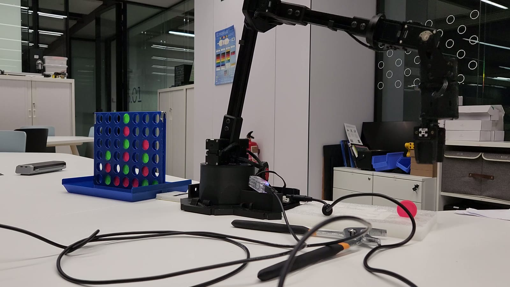
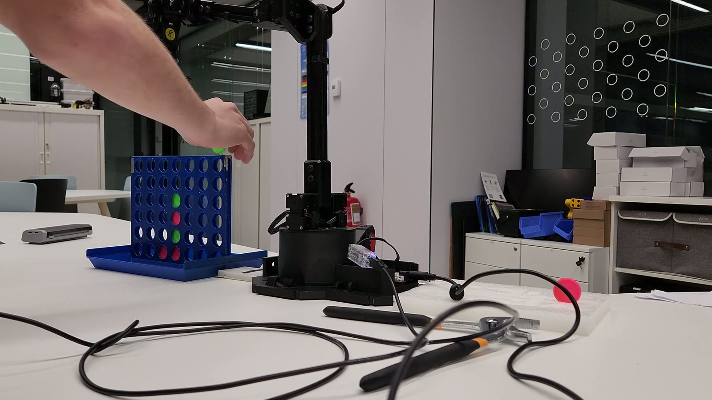
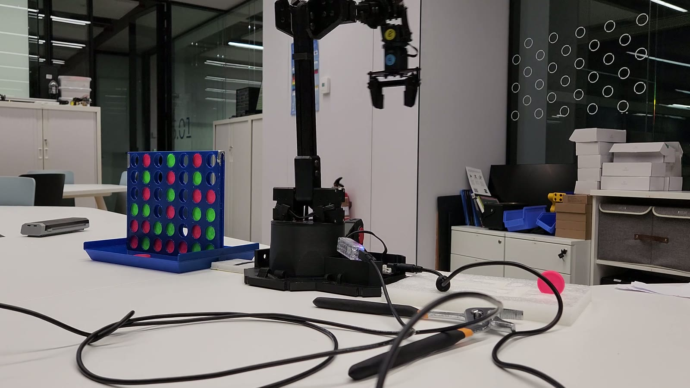

Connect 4 brain
Game engine simulates futures and exposes APIs that other experiments reuse for decision loops.
- Search depth adjusts based on available compute and latency budgets.
- Board telemetry feeds into robotics pick-and-place routines.
A modular Python playground where game strategy, image annotation, and robotics co-exist inside one workflow.

Demo video
Experiment lanes
Connect 4 engines battle through scripted tournaments while logging heuristics that other modules can steal.
Annotation workflows mark cells, tokens, and defects with the same tooling, producing training data for future models.
Serial adapters drive a tabletop arm through rehearsed motions that replay strategy or vision outputs safely.
Shared backbone
Game engine simulates futures and exposes APIs that other experiments reuse for decision loops.
Annotation loop writes normalized coordinates and masks to
Processed_Cells/ for model training.
Unified adapter translates strategy outputs or vision detections into serial commands.
A better heuristic in Connect 4 informs the robot pick-and-place strategy; improved annotation flows sharpen the perception stack. VictorIA keeps all disciplines speaking the same language.
Flow
Launch main.py and pick a lane—game AI duel, image point lab, or
robot exercise.
Load boards, ingest imagery, or read hardware sensors; normalize everything
through utils/ adapters.
Strategy modules, detectors, or heuristics transform the state into actionable commands or annotations.
Robotics routines move pieces, processed images land in
Processed_Cells/, and logs capture performance metrics.
Gallery

